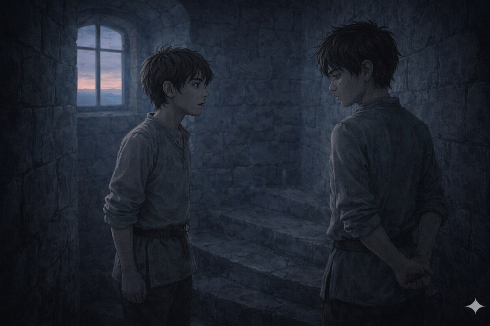
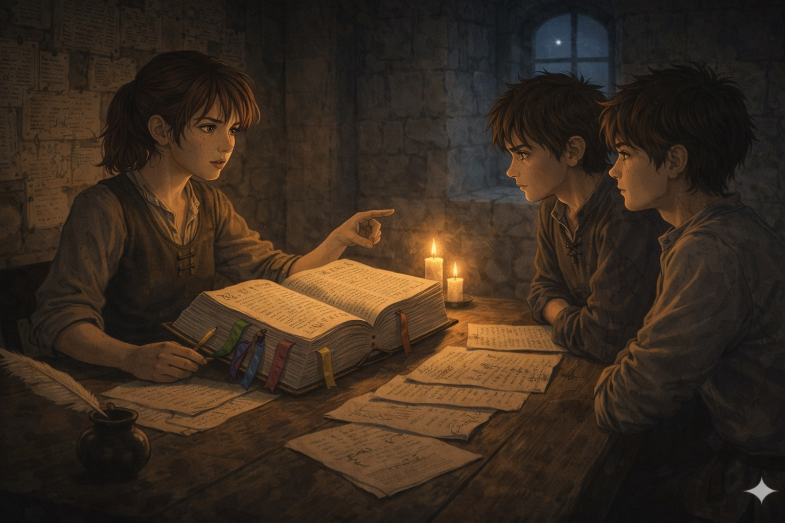
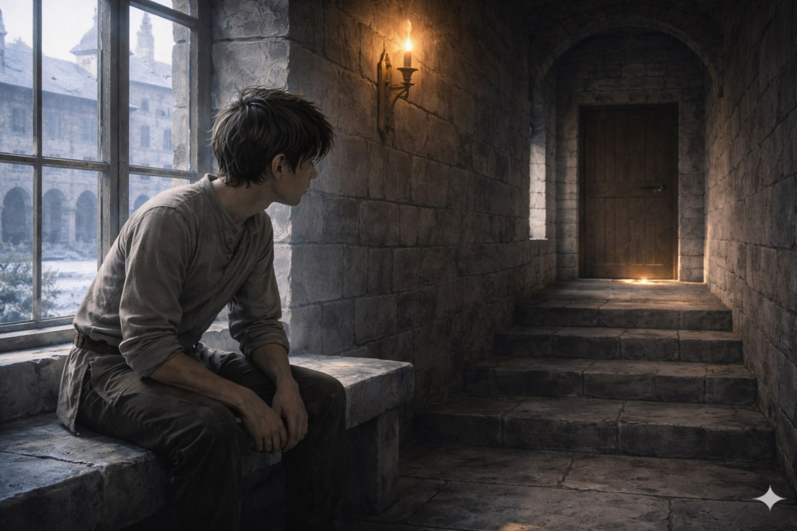

Il n'y a pas de preuve directe. Il y a Réna, qui connaît les textes. Il y a la Maîtresse Elowen, qui ne peut pas faire les choses à votre place — mais qui peut rendre possible ce que vous devez faire vous-mêmes.

Le lendemain matin. L'escalier de service, avant l'heure des cours. Lyam a répété la formulation plusieurs fois pendant la nuit — pas pour l'embellir, pas pour l'atténuer. Pour être sûr de ne rien omettre et de ne rien ajouter.
Il dit les faits dans l'ordre. Les mots exacts. L'heure, la porte, la lampe à huile, la façon dont Daran se tenait debout derrière Belart.
Il ne dit pas : voilà ce que ça signifie pour toi. Kern était assez intelligent pour le comprendre seul.
Kern reste silencieux. L'escalier est froid. Quelqu'un, deux étages plus haut, renverse un seau d'eau. Kern regarde ses mains.
Puis il dit : « Il faut qu'on aille voir Réna. »

Trois jours de préparation. La veille du Conseil, dans la Salle des Cartes. Réna a le Recueil des usages institutionnels devant elle — rubans de couleur glissés entre les pages.
Les documents ont plus de poids que les témoignages. Mais les témoignages peuvent contester les documents s'ils sont suffisamment précis et concordants.
Kern dit : « Et si ce signalement que Daran a mentionné n'existe pas ? »

Lyam n'entre pas dans la salle. Il attend dans le couloir de l'aile administrative — mieux éclairé que celui de service, bancs de pierre contre les murs, fenêtre sur la cour intérieure.
À travers la porte : des voix. Pas les mots — juste les tonalités. Plusieurs voix adultes. La voix de Kern. La voix de Réna, précise, posée, sans montées ni descentes. Puis une troisième voix — assurée, avec la décélération légère des gens habitués à parler devant des assemblées.
Daran de Mauren est dans la salle. Ce n'était pas dans la procédure.
Attendre est une compétence. Ce n'est pas une compétence qu'on apprend dans les livres. C'est quelque chose qui s'apprend dans les salles d'attente et les couloirs et les matins où quelque chose d'important se joue ailleurs et où il n'y a rien à faire qu'être là et tenir.

La Maîtresse Elowen reçoit Kern et Réna dans son bureau méticuleux. Kern expose les faits — bien, sobrement. Il dit ce qu'il n'a pas fait. Il dit ce que le registre dit. Il demande une contresignature sur la demande de consultation.
La Maîtresse Elowen lit le document de Réna lentement, sans hâte. Elle s'arrête à un endroit. Repart. S'arrête encore.
Mais sachez que si ce signalement existe et qu'on vous en donne lecture, vous ne pourrez pas l'utiliser directement dans la procédure en cours. Vous pourriez seulement en demander la vérification par un tiers indépendant.
Les documents qui existent ont une façon de peser dans les décisions, même quand ils ne sont pas cités formellement.
Il y a des gens qui ne font pas les choses à ta place. Ils rendent possible ce que tu dois faire toi-même. — Réna